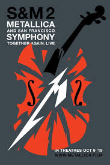

Metallica & San Francisco Simphony S&M 2
Metallica & San Francisco Symphony: S&M2 (EUA, 2019)12 anos Conteúdo Alternativo 150
SINOPSE: No dia 9 de outubro de 2019, a Trafalgar Releasing apresenta S&M2, a imperdível celebração do 20º aniversário dos inovadores shows e discos S&M2 do Metallica gravados com a Orquestra Sinfônica de São Francisco. Veja-os mais uma vez se apresentando com a Sinfônica com o lendário maestro Michael Tilson Thomas conduzindo parte do show, dando início à sua última temporada em San Francisco. Gravado ao vivo nos dias 6 e 8 de setembro, os shows também comemoram a inauguração do moderno Chase Centre, uma adição histórica à orla da cidade. Incluindo os “clássicos” do Metallica desde o lançamento do S&M em 1999, bem como versões sinfônicas de novas músicas, este lançamento nos cinemas dá a milhões de fãs em todo o mundo a chance única de experienciar este o show na tela do cinema.
DIREÇÃO: Wayne Isham
ELENCO: James Hetfield; Lars Ulrich; Kirk Hammet; Robert Trujillo; Sinfonia de São Francisco com Michael Tilson Thomas